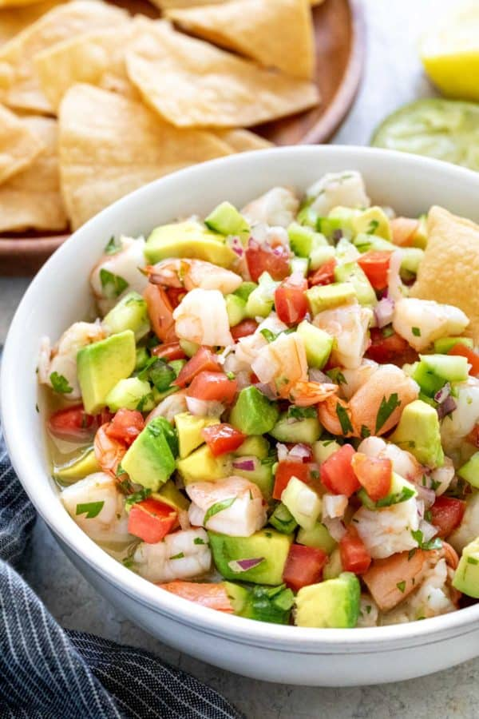

Shrimp Ceviche

Dish Description
When we think of Mexican food, we usually think of tacos, enchiladas and burritos but, have you ever
heard of ceviche? It is a delicious yet relatively unknown Mexican dish. Ceviche is prefcet for a hot
and sunny day as it is a very light and refreshing dish. It can be made with all sorts of seafood, but today
you will learn how to make shrimp ceviche.
Ingredients
- 1lb of deshelled and devained shrimp
- 2 large tomatoes
- 1/2 red onion
- 2 jalapeno peppers (for a mild ceviche, use 1 bell pepper)
- 8oz lime juice
- Salt and pepper
- 1 cucumber (optional)
- 1 ripe avocado
- 1/2 bunch of cilantro
- Your favorite tortilla chips
Preparation
- Dice your shirimp as large or small as you'd like.
- in a large bowl, place your shrimp, lime juice, salt and pepper to taste and set aside.
- Allow shrimp to marinate for at least 1hr or up to over night.
- Meanwhile, dice your peppers, onion, tomato, cilantro, and cucumber.
- Once the shrimp has marinated to your liking, incorporate everything in a large enough bowl.
- Do not discard the lime juice your shrimp has been marinating in.
- Adjust salt and pepper.
- Serve on a plate and add a few avocado slices on top.
- Enjoy your cevice with some tortilla chips